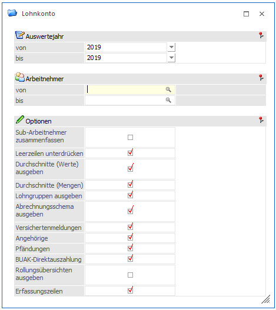

Das Jahreslohnkonto listet die Abrechnungen des Arbeitnehmers in getrennten Abrechnungsmonaten und summiert die Abrechnungsbeträge, Pflichtigkeiten und Bemessungsgrundlagen des Arbeitnehmers.
Das Jahreslohnkonto wird im Programmpunkt
1 Auswertungen
1 Jahreslohnkonto
oder Schnellaufruf
1 STRG + J
aufgerufen, wobei gleich das aktuelle Abrechnungsjahr als Auswertejahr vorgeschlagen wird.

Auswertejahr
Aus den Auswahllistboxen
Ø Von
Ø Bis
Können die Abrechnungsjahre ausgewählt werden, für die die Auswertung durchgeführt werden soll. Es werden alle Jahre aufgelistet, für die Abrechnungen vorhanden sind.
Achtung:
Wenn im laufendem Jahr (z.B. 2007) bereits das Nachfolgejahr (2008) zur Auswahl angeboten wird, dann kann das nur von einer Austrittsabrechnung mit Ersatzleistungen in nachfolgende Monate stammen.
Ø Arbeitnehmer von - bis:
Eingabe des oder der Arbeitnehmer, für den oder die das Jahreslohnkonto ausgedruckt werden soll. Wie die AN-Nummer eingegeben werden kann, dazu gibt es mehrere Möglichkeiten. Details dazu entnehmen Sie bitte dem Kapitel Aufruf einer AN-Nummer. Wird in den Feldern von - bis ein AN eingetragen, so wird daneben der Name des AN angezeigt, wobei der Name unterstrichen dargestellt wird. Durch einen Klick auf den AN wird standardmäßig der AN-Stamm aufgerufen. Über die rechte Maustaste kann aber individuell eingestellt werden, welche Aktion ausgelöst werden soll. Dabei stehen folgende Optionen zur Verfügung:

ü Arbeitnehmerstamm
Es wird der
AN-Stamm aufgerufen, wobei gleich der Datensatz des angezeigten AN angezeigt
wird.
ü Arbeitnehmerinfo
Es wird die
Arbeitnehmerinfo im Programm WinLine INFO geöffnet.
ü Jahreslohnkonto
Es wird das
Steuerfenster für das Jahreslohnkonto aufgerufen, wo der ausgewählte AN gleich
vorgeschlagen wird. Die Ausgabe muss nur mehr durchgeführt werden.
ü Arbeitnehmer Stammblatt
Es wird
das Steuerfenster für das Arbeitnehmer Stammblatt aufgerufen, wo der ausgewählte
AN gleich vorgeschlagen wird. Die Ausgabe muss nur mehr durchgeführt werden.
ü Lohnerfassung A
Es wird die
Einzelabrechnung aufgerufen, wobei gleich alle Daten des ausgewählten AN
abgerufen werden. Bei diesen Punkt ist darauf zu achten, dass ggf. die
automatischen Lohnarten abgearbeitet werden.
Die zuletzt getätigte Einstellung wird als Standard übernommen, d.h. wenn das nächste Mal nur auf den AN-Namen geklickt wird, dann wird die letzte Aktion automatisch durchgeführt. Diese Einstellung wird pro Benutzer gespeichert.
Ø Sub-Arbeitnehmer zusammenfassen
Wird diese Checkbox aktiviert, werden die Werte aller SUB-AN - sofern vorhanden -, die für einen AN angelegt wurden, zusammengerechnet. Beim Andruck der Adresse werden die Daten des letzten SUB-AN (mit der höchsten Nummer) verwendet. Bleibt die Checkbox inaktiv, wird für jeden AN und für jeden SUB-AN ein eigenes Jahreslohnkonto gedruckt.
Ø Leerzeilen unterdrücken
Ist diese Option aktiv, dann werden nur die Zeilen ausgedruckt, wo auch ein Wert vorhanden ist. Bleibt die Option inaktiv, dann werden für alle AN alle Zeilen ausgedruckt - das macht ggf. das Kontrollieren von Werten einfacher.
Ø Durchschnitte (Werte) ausgeben
Wenn diese Option aktiviert ist, dann werden die Durchschnittswerte ebenfalls mit angedruckt (sofern Durchschnitte vorhanden sind).
Ø Durchschnitte (Mengen) ausgeben
Wenn diese Option aktiviert ist, dann werden die Durchschnittsmengen ebenfalls mit angedruckt (sofern entsprechende Durchschnitte vorhanden sind).
Ø Lohngruppen ausgeben
Wird diese Option aktiviert, dann werden auch alle Lohngruppen ausgegeben, die bei den entsprechenden Abrechnungen der AN verwendet wurden.
Ø Abrechnungsschema ausgeben
Durch Aktivierung dieser Checkbox werden alle Abrechnungsschema, die bei den Abrechnungen verwendet werden, mit angedruckt.
Ø Versichertenmeldungen
Ist diese Option aktiv, dann werden auf der ersten Seite des Jahreslohnkontos auch alle getätigten Meldungen (ELDA) für den AN in Journalform mit ausgedruckt.
Ø Angehörige
Ist diese Option aktiv, dann werden auch alle angelegten Angehörigen des AN auf der ersten Seite des Jahreslohnkontos mit angedruckt.
Ø Pfändungen
Mit dieser Einstellung werden die vorhandenen Pfändungen des jeweiligen AN mit angedruckt, wobei hier nur die Stammdaten ausgegeben werden.
Ø Rollungsübersichten ausgeben
Mit dieser Option wird - sofern Rollungen vorhanden sind - die jeweils ursprüngliche Abrechnung und die dazugehörige Rollung angezeigt. Dieser Ausdruck wird aber nur durchgeführt, wenn die Ausgabe am Drucker erfolgt.
Ø Erfassungszeilen
Mit dieser Option werden alle Erfassungswerte mit deren Betrag, kumuliert auf die Lohnarten, angedruckt.
Buttons
Ø Ausgabe Button
Aus der Auswahllistbox kann gewählt werden, ob die Ausgabe am Bildschirm, am Drucker oder auf Tabelle (Excel) durchgeführt werden soll. Standardmäßig wird die Ausgabe auf Bildschirm vorgeschlagen, die auch durch Drücken der F5-Taste gestartet werden kann.
Die Einstellungen, die für den Ausdruck vorgenommen, werden pro Benutzer gespeichert und beim nächsten Aufruf auch entsprechend vorgeschlagen.
Ø Filter
Aus der Auswahllistbox kann ein bestehender Filter ausgewählt werden, über den der Umfang des Ausdruckes bestimmt werden kann. Es stehen alle Werte aus dem AN-Stamm als Selektions- und Sortierkriterium zur Verfügung. Durch Anklicken des Filter-Buttons kann auch ein neuer Filter definiert werden.
Der Druck des Jahreslohnkontos wird auch durch Drücken der F5-Taste gestartet (wobei die Einstellung vom Ausgabe-Button übernommen wird). Dabei werden nur die Seiten gedruckt, die auch tatsächlich abgerechnete Werte enthalten (z.B. wenn ein AN im März austritt, dann wird nur das Stammblatt und die erste Jahreshälfte gedruckt, wenn ein AN erst im Dezember eintritt, dann wird nur das Stammblatt und die zweite Jahreshälfte gedruckt). Hat der AN gar keine Abrechnung, wird auch das Stammblatt nicht ausgegeben.
Informationsfelder
Ø Anzahl Rollungen
Hier wird in Klammern angezeigt, wie oft dieses Monat bereits gerollt wurde. Wurde das Monat noch nicht gerollt, wird immer 0 angezeigt. Wenn die Ausgabe auf Bildschirm erfolgt, dann kann die Zahl bei Anzahl Rollungen angekickt werden. Dadurch wird die Rollungsübersicht angezeigt, in der die ursprüngliche Abrechnung und die jeweiligen Rollungen angezeigt werden (auch mit Einzelbeträgen).
Ø Monat
Der jeweilige Monatsname kann beim Bildschirmausdruck auch angeklickt werden - dadurch erhält man dann die jeweilige Abrechnung des AN mit allen Werten.
Ø Gesamt
Summe, aller bei dem Arbeitnehmer durchgeführten Abrechnungen (auch die Abrechnungssummen des aktuellen Abrechnungsmonats werden mit addiert).
Ø Monat
Die Monatswerte der abgerechneten Monate werden angezeigt (auch die Werte des aktuellen Monats werden angezeigt).